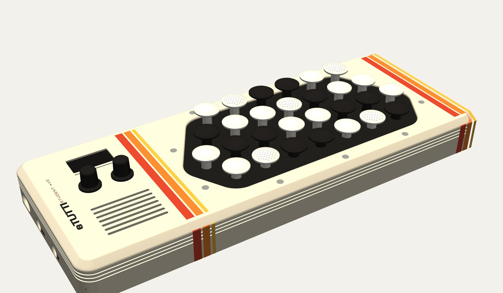
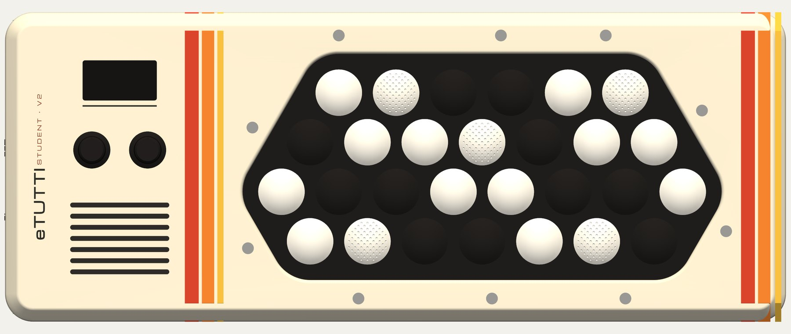
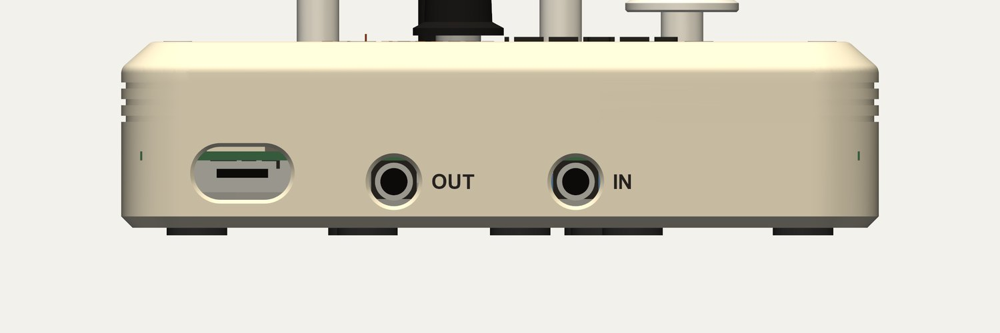
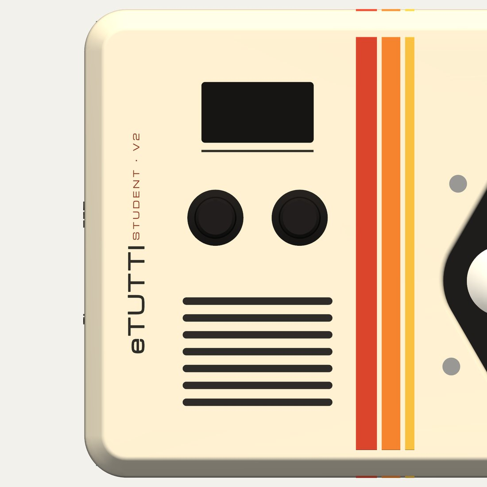
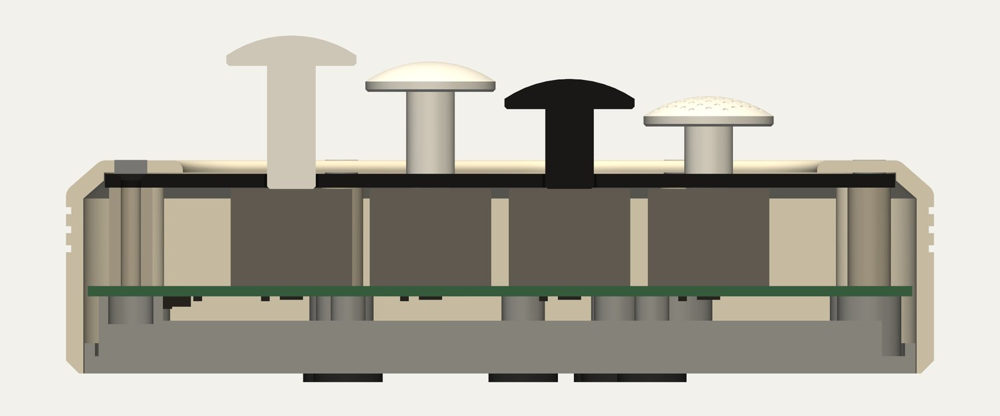
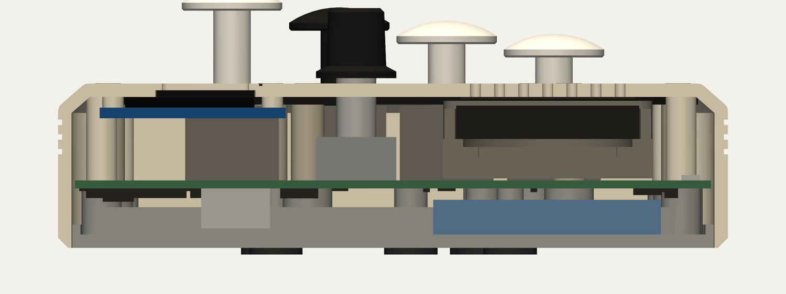
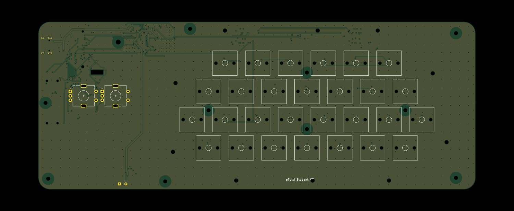
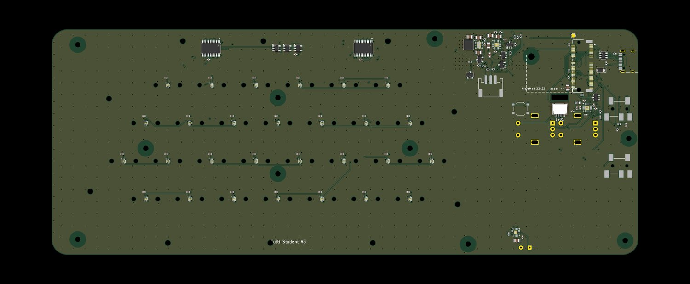
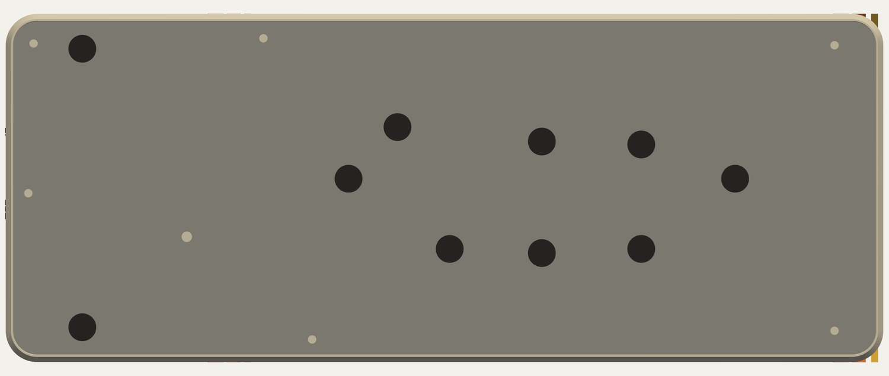
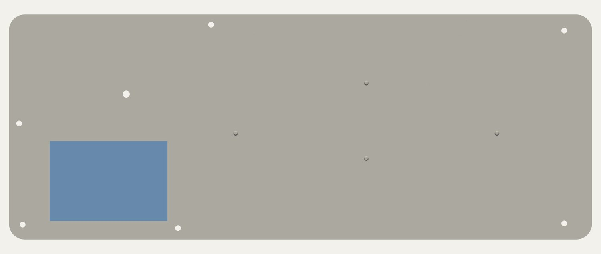

BeatConfused Studio · protótipo
eTuttiSTUDENT · V3
Um acordeão de teclado para estudar: 28 teclas magnéticas com velocity, tela, dois knobs, alto-falante, entrada de microfone, bateria e USB-C, numa caixa Retrô de 252 × 100 × 24,6 mm. A placa vem pronta da JLCPCB, montada toda pelo fundo.

1 · Conceito
Um acordeão de estudo, do tamanho de uma prancheta
Para quem nunca viu o projeto: o eTutti é uma família de instrumentos eletrônicos com o teclado de um acordeão de botões (C-griff), a sensibilidade de um instrumento de verdade e nenhum fole. O Student é o modelo compacto, para estudar em qualquer lugar. A V3 é a mesma ideia da V2, com a placa refeita para que a fábrica monte tudo pelo fundo, e o case ajustado a isso.
- 28 teclasC-griff, de G3 a E5, em 4 fileiras a 18,5 mm
- Velocitysensor Hall sob cada tecla Gateron, curso de 4,1 mm
- 252 × 100 × 24,6 mmtampa creme sem emenda, bandeja cinza, 3 sulcos e chanfro de 4,0 × 3,5 mm
- Tela OLED 0,96″registro, volume e carga, atrás de acrílico fumê
- 2 knobs com cliquevolume e registro; o clique liga
- Som próprioalto-falante de 28 mm numa caixa fechada de 9,75 cm³
- Entradas e saídasUSB-C (carga e MIDI), OUT 3,5 mm e IN 3,5 mm (microfone)
- Bateria LiPo1 célula, cerca de 1000 mAh, trocada tirando 6 parafusos
O que é o C-griff
Um acordeão de botões tem os botões em fileiras que sobem de semitom em semitom. Na disposição C-griff, cada fileira vizinha avança um semitom e o padrão se repete a cada terça menor: uma frase se toca em qualquer tom com o mesmo desenho dos dedos. Aqui são 28 botões, de G3 a E5, em 4 fileiras de 7, 8, 7 e 6; as fileiras se deslocam em meia tecla, num arranjo hexagonal a 18,5 mm.
O teclado
As fileiras sobem 2, 2 e 3 mm uma sobre a outra (topos a 7,4, 9,4, 11,4 e 14,4 mm acima do tampo), de modo que o dedo sente cada fileira. Os botões têm Ø 15 mm e cúpula convexa, em três tipos: branco, preto e branco com pontos (o C e o F, para achar a posição no escuro). Cada botão tem uma haste com encaixe em cruz sobre uma tecla Gateron magnética, cujo sensor Hall mede a velocidade da descida.
A grade
Uma placa de FR-4 de 1,6 mm, preta fosca, cobre as teclas a 0,15 mm e as segura sem plate nem parafusos à vista: ela é fixada só pela borda, com 10 parafusos de cabeça escareada rentes à face, sob a tampa. A tampa cobre a grade com 1,4 mm de material.
A placa, pelo fundo
Na V3 a JLCPCB monta todas as peças só pelo lado de baixo da placa: o USB-C, os dois jacks e os conectores ficam abaixo dela, e a tampa os recebe com furos inteiros na parede. O topo da placa só tem os dois encoders (soldados em casa) e as ilhas dos fios do alto-falante. Isso baixa o custo da montagem e tira da bancada 11 peças.
O acabamento Retrô
Faixas vermelha, laranja e amarela que dão a volta pelo tampo, pelo chanfro e pela parede, e o logo em Michroma em rebaixo de 0,4 mm com tinta.
- tampa #E8DEC6
- bandeja #9C9B96
- #C8402A
- #E07A2C
- #E3B23C
- tinta #2B2925
- tinta #8A3A22
Rigidez e apoio
A placa não leva parafusos na área do teclado. Em vez disso, 4 pinos e 4 pilares impressos na bandeja a sustentam por baixo, sobre 10 pés de 80 Shore A: a pior tecla cede 0,036 mm sob 3 N (0,047 mm no pior caso, com o pé comprimido), abaixo da meta de 0,05 mm.









2 · Eletrônica
Como o instrumento pensa e soa
Uma placa só, de 4 camadas, com 28 sensores sob as teclas, um módulo de processador encaixado, o som, a bateria e a tela. Esta seção explica o desenho em blocos, depois o caminho de cada sinal; os esquemas completos, folha a folha, estão no final.
Como funciona, em quatro frases
- Lê as teclas. Sob cada tecla há um sensor Hall TMAG5253. O ímã da haste se aproxima ao apertar, e o sensor devolve uma tensão que muda com a distância. Dois multiplexadores de 16 canais levam as 28 tensões a dois pinos analógicos do módulo; o módulo escolhe o canal pelos seletores S0–S3 e lê a descida da tecla milhares de vezes por segundo. A velocity vem do tempo que o sinal leva para percorrer uma parte do curso.
- Pensa. O módulo MicroMod Teensy (i.MX RT1062 a 600 MHz, 16 MB) roda o firmware do acordeão: um sintetizador de lingüetas amostradas, com sete registros, em que a velocity vira a pressão do fole. Ele também lê os dois encoders (volume e registro), a tela e o botão Program.
- Soa. O módulo manda o áudio digital (I²S) ao codec SGTL5000, que alimenta a saída de fone (OUT) e recebe o microfone (IN, com bias para eletreto); o mesmo I²S vai ao amplificador MAX98357A, que toca o alto-falante de 28 mm quando não há fone plugado.
- Alimenta-se. O USB-C carrega a bateria LiPo pelo BQ24074 (que lê o NTC da bateria) e o TPS63001 faz 3,3 V estáveis para tudo, seja a bateria cheia, seja quase vazia. Ligar um cabo USB acorda o instrumento (D206); sem cabo, o clique do volume liga e desliga.
Os sinais, por área
Energia
USB-C com proteção (USBLC6 e TVS SMF5.0A) → carregador BQ24074 → bateria (J202, 3 fios com NTC) → TPS63001 e indutor de 2,2 µH → 3,3 V. O módulo recebe o 3,3 V já regulado e traz o seu próprio sequenciamento de partida (o de fábrica da PJRC e da SparkFun).
Teclas
28 sensores em 2 grupos, um multiplexador por grupo. Os 28 sensores são mais da metade do consumo da placa, por isso o firmware do Student V01 os liga em dois grupos, só enquanto lê (60 µs de despertar).
Som
SGTL5000 no barramento I²C do módulo e na linha I²S (pinos 7/20/21/23); MAX98357A na mesma I²S; fone e microfone nos dois jacks de 3,5 mm (a manga é a terra; com um fone plugado, o alto-falante é desligado).
Interface
Dois encoders com clique, o botão Program e a tela OLED por I²C: o mesmo barramento do codec, sem pino novo. A tela só mostra estado (registro, volume, carga), e o firmware a manda em pedaços pequenos, para não atrasar a leitura das teclas.
A placa: o que mudou da V2 para a V3
| V2 | V3 | |
|---|---|---|
| Lado de cima | encoders, USB-C, 2 jacks, ESD, TVS, passivos, J401, H101 | só os 2 encoders (solda em casa) e os pads dos fios do alto-falante |
| Montagem na JLCPCB | dois lados | só o fundo (montagem econômica) |
| Conector da tela (J401) | topo | fundo, com fenda de 7 × 2,5 mm para o cabo subir à tela |
| Fixação do módulo (H101) | espaçador SMD | furo liso de 2,7 mm, parafuso e porca de náilon M2,5 e espaçador de 2,5 mm |
| Jacks | SHOU HAN PJ-327A | XUNPU PJ-327A (a JLCPCB sinalizava o outro como difícil de processar) |
| Energia com USB | cadeia PWR_EN (5 peças) | D206: o USB liga o 3,3 V; sem cadeia |
| Par USB D+/D− | em F.Cu, 90 Ω alvo | inteiro em B.Cu, sem vias, 17,209 mm cada linha, sobre uma ilha de terra |
| Tipos estendidos na JLCPCB | ~22 | 18 |




Os esquemas, folha a folha
Exportados do KiCad (SVG, abrem no navegador; use o zoom): uma folha por área, com os códigos das peças (LCSC) no campo Codigo de cada uma.
- Raizas seis folhas ligadas
- P · Processadormódulo MicroMod, conectores, botão Program
- E · EnergiaUSB-C, carregador, bateria, conversor
- F · Fonecodec, jacks OUT e IN, microfone
- I · Interfaceencoders, tela
- A · Alto-falanteamplificador, alto-falante
- T · Teclas28 sensores e 2 multiplexadores


3 · Peças e fornecedores
O que leva, por área e por fornecedor
Seis áreas. A coluna “Fornecedor” diz onde cada peça se compra; o orçamento, na seção 6, está agrupado por pedido.
Eletrônica
A placa vem pronta da JLCPCB, com todas as peças soldadas pelo fundo. Em casa: dois encoders, o módulo do processador e os fios do alto-falante.
| Peça | Qtd | Fornecedor | Observação |
|---|---|---|---|
| Placa principal, montada | 1 | JLCPCB | 4 camadas, 1,2 mm; 130 peças soldadas por máquina, todas no fundo; 28 sensores Hall sob as teclas |
| Módulo MicroMod Teensy (DEV-16402) | 1 | SparkFun / DigiKey | i.MX RT1062, 16 MB; encaixa no conector M.2 do fundo, preso no H101 |
| Sensor Hall TMAG5253 (C22401868) | 28 | JLCPCB (LCSC) | um sob cada tecla; lê os dois polos |
| Codec de áudio SGTL5000 (C2651833) | 1 | JLCPCB (LCSC) | fone, entrada de microfone com bias, saída para o amplificador |
| Amplificador MAX98357A (C910544), carregador BQ24074 (C54313), conversor TPS63001 (C28060) | 3 | JLCPCB (LCSC) | som do alto-falante, carga da bateria, 3,3 V |
| Multiplexadores 74HC4067 (C179326) | 2 | JLCPCB (LCSC) | leem as 28 teclas por 2 canais |
| Encoders com clique EC11E18244AU (C202365) | 2 | LCSC / Digi-Key (solda em casa) | eixo de 20 mm (ponta a ~24,5 mm da placa): volume e registro; a JLCPCB não os solda nesta versão |
| Conectores: USB-C, 2 jacks 3,5 mm (OUT e IN), JST SH da tela, JST PH da bateria | 5 | JLCPCB (LCSC) | USB-C TYPE-C-31-M-12, jacks XUNPU PJ-327A, SM04B-SRSS-TB, S3B-PH-SM4-TB |
Teclado
28 teclas G3 a E5 em fileiras de 7, 8, 7 e 6, a 18,5 mm; fileiras 2 mm, 2 mm e 3 mm mais altas.
| Peça | Qtd | Fornecedor | Observação |
|---|---|---|---|
| Teclas Gateron KS-20 Magnetic Orange | 28 | Gateron | curso de 4,1 mm; apoiadas na placa, seguras pela grade |
| Grade FR-4 de 1,6 mm, máscara preta fosca, furos escareados | 1 | JLCPCB | 28 furos de Ø 6,2 mm e 10 furos escareados a 90° (boca de Ø 3,8 mm); fica a 0,15 mm acima das teclas |
| Espaçadores Ø 5 × 11,35 mm | 10 | impressão | entre a placa e a grade, na borda |
| Parafusos M2 × 16 de cabeça escareada e porcas M2 | 10 + 10 | ferragem | a cabeça fica rente à grade; a porca fica sob a placa, dentro de um copo da bandeja |
| Botões Ø 15 mm: branco, preto, branco com pontos (C e F) | 28 | impressão | 4 alturas de haste; topos a 7,4 / 9,4 / 11,4 / 14,4 mm acima do tampo |
| Molas longas de 65 g ou 80 g (opcional) | 28 | loja de teclados | mudam o peso da tecla; não alteram placa nem firmware |
Interface
Tela, dois knobs, grade do alto-falante e legendas, à esquerda do teclado.
| Peça | Qtd | Fornecedor | Observação |
|---|---|---|---|
| Módulo OLED 0,96″ 128 × 64 (I²C) | 1 | loja de eletrônica | girado 180°, preso por baixo da tampa em 4 postes (M2 × 4) |
| Cabo JST SH de 4 vias, 50 mm | 1 | loja de eletrônica | o plugue vai no J401, no fundo da placa; os fios sobem pela fenda e são soldados na tela |
| Janela de acrílico fumê de 1 mm | 1 | corte a laser | 24 × 13 mm de vidro à vista |
| Knobs chapéu de 10 mm | 2 | impressão | Ø 12 mm, 11,3 mm sobre o tampo, furo em D de 9,2 mm sobre o eixo inteiro |
Som
Alto-falante de 28 mm sob 7 fendas, com caixa acústica fechada em L de 9,75 cm³.
| Peça | Qtd | Fornecedor | Observação |
|---|---|---|---|
| Alto-falante Ø 28 × 5 mm, 8 Ω, 2 W | 1 | loja de eletrônica | fios soldados ao J501 (pads no topo da placa) |
| Caixa acústica em L, com o anel de fixação | 1 | impressão | estanque; 2 parafusos M2 × 5 nas buchas da tampa |
| Tela acústica 0,3 mm e junta de espuma de 1 mm | 1 + 1 | loja de eletrônica | entre as fendas e o alto-falante |
Energia
Bateria no piso da bandeja; para trocá-la, tira-se a bandeja (6 parafusos).
| Peça | Qtd | Fornecedor | Observação |
|---|---|---|---|
| Bateria LiPo 503450, ~1000 mAh, 3 fios | 1 | eBay / Amazon | o terceiro fio é o NTC de 10 kΩ |
| Cabo USB-C | 1 | — | carga, MIDI e configuração pela página |
Case, apoios e acabamento
252 × 100 × 24,6 mm, tampa creme sem emenda e bandeja cinza (acabamento Retrô).
| Peça | Qtd | Fornecedor | Observação |
|---|---|---|---|
| Tampa, com o logo e as legendas em rebaixo de 0,4 mm | 1 | impressão | chanfro de 4,0 × 3,5 mm, três sulcos, 6 postes de parafuso; furos inteiros para USB-C, OUT e IN |
| Bandeja do fundo | 1 | impressão | 2 mm de piso, borda, nervuras, berço da bateria, 4 pinos e 4 pilares de apoio sob a placa |
| Parafusos M2 × 14 da bandeja | 6 | ferragem | pelo fundo: atravessam a bandeja e a placa e entram nos postes da tampa |
| Pés de poliuretano ou silicone de 80A, Ø 8 × 1,5 | 10 | loja de eletrônica | colados nos rebaixos da bandeja: 4 sob os pinos, 4 sob os pilares, 2 à esquerda |
| Fixação do módulo: parafuso M2,5 × 8, espaçador 2,5, porca M2,5 (náilon) | 1 + 1 + 1 | ferragem | pilha de cima para baixo: parafuso, placa, espaçador, módulo, porca |
| Tinta e faixas | 1 kit | tintas / vinil | faixas #C8402A, #E07A2C, #E3B23C; tinta #2B2925 e #8A3A22 |
Os mesmos itens, por fornecedor
| Fornecedor | Fornece |
|---|---|
| JLCPCB / LCSC | placa principal montada (130 peças), grade FR-4 escareada |
| Gateron | 28 teclas KS-20 Magnetic Orange (pacote de 35) |
| SparkFun ou DigiKey | módulo MicroMod Teensy |
| LCSC ou Digi-Key | 2 encoders EC11E18244AU (C202365), para soldar em casa |
| eBay ou Amazon | bateria LiPo 503450 de 3 fios |
| Loja de eletrônica | tela OLED, cabo JST SH, alto-falante, tela acústica, espuma, silicone, cabo USB-C, pés de 80A |
| Ferragem e tintas | parafusos e porcas M2 e M2,5 (inox A4, latão ou náilon), tinta, vinil |
| Impressão 3D (JLC3DP, PCBWay, Craftcloud) | tampa, bandeja, 28 botões, 10 espaçadores, 2 knobs, caixa acústica |
| Corte a laser | janela de acrílico fumê |
Os arquivos para a JLCPCB estão em etutti/hardware/student_v03/fab/: Gerbers da placa e da grade, BOM (33 linhas, 130 peças) e CPL (130 peças, todas no fundo). Cada peça tem o código LCSC; 18 tipos são estendidos (cobrança por tipo) e os demais são básicos.
4 · Vista explodida
Da bandeja aos botões
As peças em ordem de baixo para cima, como se montam. Na placa, as peças do fundo são as que a JLCPCB solda.

- Bandeja do fundo e 6 parafusos M2 × 14
cinza, impressa; 10 pés de 80A colados por baixo - Bateria LiPo 503450
no berço da bandeja - Placa principal
montada pela JLCPCB, peças no fundo - Módulo MicroMod Teensy
sob a placa, no conector M.2 - Parafuso, espaçador e porca M2,5 de náilon
prendem o módulo no H101 - Porcas M2 × 10
sob a placa, uma em cada copo da bandeja - Encoders × 2
soldados em casa, no topo da placa - Teclas Gateron × 28
apoiadas na placa, sem solda - Parafusos M2 × 16 escareados × 10
rentes à face da grade - Espaçadores × 10
Ø 5 × 11,35 mm, na borda - Grade FR-4 de 1,6 mm
preta fosca, 28 furos e 10 escareados - Tampa
creme, impressa - Janela de acrílico fumê
24 × 13 mm de vidro à vista - Tela OLED 0,96″
presa por baixo da tampa, girada 180° - Alto-falante e caixa acústica
em L, 9,75 cm³ - Botões × 28
entram por cima, pela grade - Knobs × 2
10 mm, sobre os eixos dos encoders
5 · Montagem
Dez passos, uma solda e dois fios
O manual completo, com um desenho explodido por passo, ferramentas, tempos, cuidados e verificações, está em montagem.html. Aqui, o resumo.
| # | Passo | Tempo | O que se monta |
|---|---|---|---|
| 1 | A placa e os encoders | 20 min | placa principal, 2 encoders EC11E18244AU |
| 2 | O módulo MicroMod | 10 min | módulo MicroMod Teensy, parafuso M2,5 × 8 de náilon, espaçador de náilon de 2,5 mm, porca M2,5 de náilon |
| 3 | As 28 teclas Gateron | 10 min | 28 teclas Gateron KS-20 Magnetic Orange |
| 4 | A grade de FR-4 | 25 min | 10 espaçadores Ø 5 × 11,35, grade FR-4 escareada, 10 parafusos M2 × 16 escareados, 10 porcas M2 (todos não magnéticos) |
| 5 | Os botões | 10 min | 28 botões impressos: 12 brancos, 11 pretos, 5 brancos com pontos |
| 6 | O cabo da tela | 15 min | cabo JST SH de 4 vias de 50 mm (uma ponta solta), módulo OLED 0,96″ |
| 7 | A tampa por dentro | 30 min | tampa, janela de acrílico fumê, módulo OLED, caixa acústica, alto-falante, tela acústica, junta de espuma, 4 parafusos M2 × 4, 2 parafusos M2 × 5 |
| 8 | A placa na tampa | 10 min | tampa com tudo o que leva dentro; a placa com teclas, grade e botões |
| 9 | Bateria, bandeja e parafusos | 20 min | bandeja do fundo, 10 pés de 80A, bateria LiPo 503450, 6 parafusos M2 × 14 |
| 10 | Os knobs | 5 min | 2 knobs de 10 mm |
A solda: os 2 encoders (passo 1) e os 4 fios da tela e os 2 do alto-falante (passos 6 e 7). A ordem importa: a placa é montada com tudo, e só então desce na tampa, de cabeça para baixo, e a bandeja fecha por baixo.




6 · Orçamento
Quanto custa um instrumento
Um instrumento completo, pedindo o mínimo à JLCPCB (5 placas, 2 montadas). Os valores são faixas, em dólares; libras convertidas a £ 1 = US$ 1,30 (uma suposição, não uma cotação). Fora: frete, IVA e impostos de importação.
| Pedido | Fornecedor | Valor |
|---|---|---|
| JLCPCB · placa montada | JLCPCB (peças da LCSC) | US$ 172 a 183 |
| JLCPCB · grade do teclado | JLCPCB (ou PCBWay) | US$ 15 a 30 |
| Gateron | Loja da Gateron (ou Chosfox, Ukeebs) | US$ 24,50 a 26,60 |
| SparkFun · módulo | DigiKey UK ou SparkFun | US$ 24,30 a 29,16 |
| eBay / Amazon · energia | eBay, Amazon | US$ 6,50 a 10,40 |
| Eletrônica de bancada | Pimoroni, Adafruit, SparkFun, Mouser, Amazon, eBay ou AliExpress | US$ 14,30 a 36,40 |
| Ferragem e acabamento | ferragem, loja de modelismo ou de tintas | US$ 23,40 a 48,10 |
| Impressão 3D | JLC3DP, PCBWay ou Craftcloud (resina ou nylon MJF) | US$ 58,50 a 143 |
| Total do primeiro instrumento | US$ 339 a 507 | |
Opcional, fora do total: molas de 65 g e de 80 g para o peso da tecla, US$ 7,80 a 15,60.
Detalhe por pedido
| JLCPCB · placa montada · JLCPCB (peças da LCSC) | ||||
|---|---|---|---|---|
| Item | Qtd | Observação | Fonte do preço | Valor |
| Placa principal, 4 camadas, 246,5 × 95 × 1,2 mm: 5 unidades (engenharia 25,00 + placa 14,50) | 5 | fab/student_v03_gerbers.zip | preço visto | US$ 39,50 |
| Montagem econômica só pelo fundo: preparação e estêncil | 1 | BOM e CPL em fab/ | preço visto | US$ 9,79 |
| 18 tipos de peça estendida × US$ 3,09 | 18 | a JLCPCB cobra por tipo; as demais são básicas | preço visto | US$ 55,62 |
| Peças de 2 placas montadas (130 peças cada, 33 linhas de BOM) | 2 | sensores, codec, carregador, amplificador, conectores | estimativa | US$ 64 a 75 |
| SMT e nitrogênio | 1 | estimativa | US$ 3,20 | |
| Subtotal | US$ 172 a 183 | |||
| JLCPCB · grade do teclado · JLCPCB (ou PCBWay) | ||||
|---|---|---|---|---|
| Item | Qtd | Observação | Fonte do preço | Valor |
| Grade FR-4 de 1,6 mm, máscara preta fosca, 10 furos escareados a 90°: 5 unidades (1 usada) | 5 | fab/student_v03_grade_gerbers.zip + figura | estimativa | US$ 15 a 30 |
| Subtotal | US$ 15 a 30 | |||
| Gateron · Loja da Gateron (ou Chosfox, Ukeebs) | ||||
|---|---|---|---|---|
| Item | Qtd | Observação | Fonte do preço | Valor |
| Teclas Gateron KS-20 Magnetic Orange (38 gf), pacote de 35 | 28 (de 35) | sensor Hall sob cada tecla | preço visto | US$ 24,50 a 26,60 |
| Subtotal | US$ 24,50 a 26,60 | |||
| SparkFun · módulo · DigiKey UK ou SparkFun | ||||
|---|---|---|---|---|
| Item | Qtd | Observação | Fonte do preço | Valor |
| Módulo MicroMod Teensy (DEV-16402) | 1 | £ 18,69 sem IVA na DigiKey UK; US$ 24,95 na SparkFun | preço visto | US$ 24,30 a 29,16 |
| Subtotal | US$ 24,30 a 29,16 | |||
| eBay / Amazon · energia · eBay, Amazon | ||||
|---|---|---|---|---|
| Item | Qtd | Observação | Fonte do preço | Valor |
| Bateria LiPo 503450, 3,7 V, ~1000 mAh, 3 fios (NTC), plugue JST PH 2,0 | 1 | medir o NTC (~10 kΩ) e a ordem dos fios antes de ligar | preço visto | US$ 6,50 a 10,40 |
| Subtotal | US$ 6,50 a 10,40 | |||
| Eletrônica de bancada · Pimoroni, Adafruit, SparkFun, Mouser, Amazon, eBay ou AliExpress | ||||
|---|---|---|---|---|
| Item | Qtd | Observação | Fonte do preço | Valor |
| Módulo OLED 0,96″ 128 × 64, SSD1306, I²C, 4 pinos, 3,3 V | 1 | placa de ~27,3 × 27,8 mm, 4 furos de 2 mm; conferir a ordem dos pinos | estimativa | US$ 3,90 a 7,80 |
| Cabo JST SH 1,0 mm de 4 vias, 50 mm (Qwiic / STEMMA QT), uma ponta solta | 1 | plugue no J401; os fios sobem pela fenda e são soldados na tela | estimativa | US$ 2,60 a 5,20 |
| Alto-falante Ø 28 × 5 mm, 8 Ω, 2 W | 1 | pedir a frequência de ressonância; quanto mais baixa, melhor | estimativa | US$ 2,60 a 6,50 |
| Tela acústica 0,3 mm (36 × 28 mm), junta de espuma de 1 mm Ø 28/24, silicone | 1 kit | veda a frente e o furo dos fios da caixa | estimativa | US$ 5,20 a 10,40 |
| Cabo USB-C | 1 | carga, MIDI e configuração | estimativa | US$ 0 a 6,50 |
| Subtotal | US$ 14,30 a 36,40 | |||
| Ferragem e acabamento · ferragem, loja de modelismo ou de tintas | ||||
|---|---|---|---|---|
| Item | Qtd | Observação | Fonte do preço | Valor |
| Parafusos M2 não magnéticos (latão ou inox A4): 10 × 16 mm de cabeça escareada (ISO 7046) com 10 porcas, 6 × 14 mm de cabeça panela, 2 × 5 mm, 4 × 4 mm | 22 + 10 porcas | ferro e aço-carbono perto dos ímãs das teclas distorcem a leitura | estimativa | US$ 7,80 a 13 |
| Módulo MicroMod: parafuso M2,5 × 8 de náilon, espaçador de náilon de 2,5 mm e porca M2,5 de náilon | 1 + 1 + 1 | o parafuso M2,5 × 3 que vem com o módulo não serve nesta pilha | estimativa | US$ 2,60 a 5,20 |
| Pés autoadesivos de poliuretano ou silicone de 80 Shore A ou mais, Ø 8 × 1,5 mm | 10 | o silicone macio (40–60A) não serve: a tecla pior ultrapassa 0,05 mm de flexão | estimativa | US$ 2,60 a 6,50 |
| Tinta para os rebaixos e para as faixas (vermelho, laranja, amarelo, preto, marrom-avermelhado) ou vinil adesivo | 1 kit | cores: ver a seção do conceito | estimativa | US$ 6,50 a 13 |
| Acrílico fumê escuro de 1 mm, 25,7 × 14,7 mm, cantos R 1 | 1 | corte a laser sob encomenda, ou lixado de uma chapa | estimativa | US$ 3,90 a 10,40 |
| Subtotal | US$ 23,40 a 48,10 | |||
| Impressão 3D · JLC3DP, PCBWay ou Craftcloud (resina ou nylon MJF) | ||||
|---|---|---|---|---|
| Item | Qtd | Observação | Fonte do preço | Valor |
| Tampa (creme, sem emenda na parede, 24,6 mm de altura) e bandeja do fundo (cinza) | 1 + 1 | ~118 cm³ de material | estimativa | — |
| Botões: 12 branco, 11 preto, 5 branco com pontos (4 alturas de haste) | 28 | resina ou MJF: o encaixe em cruz não sai em filamento | estimativa | — |
| Espaçadores da grade Ø 5 × 11,35 mm | 10 | estimativa | — | |
| Knobs chapéu de 10 mm (furo em D de 9,2 mm de fundo), sem luva | 2 | preto, traço pintado | estimativa | — |
| Caixa acústica em L (9,75 cm³), na mesma peça do anel | 1 | paredes cheias: tem de ser estanque | estimativa | — |
Pedido de impressão inteiro (tampa, bandeja, 28 botões, espaçadores, 2 knobs e a caixa acústica: cerca de 150 cm³ de material). Estimativa pelo volume; cotar em duas lojas com os STEP de case/out/. | US$ 58,50 a 143 | |||
Como ler estes números
- Preço visto é o de uma página de loja de 15 de novembro de 2026 ou da cotação da JLCPCB de 18 de novembro; estimativa é uma ordem de grandeza ainda sem cotação.
- A JLCPCB cobra a maior parte do pedido em taxas fixas (engenharia, estêncil e uma taxa por tipo de peça estendida): montar as 5 placas custaria só um pouco mais que montar 2. A cotação real só sai com os arquivos enviados.
- A grade escareada pede aprovação da JLCPCB no pedido (o texto pronto está em
case/GRADE_ESCAREADA.md); se ela recusar, a grade vai para a PCBWay, que lista furo escareado entre as capacidades. - Sobram do primeiro pedido 1 placa montada (reserva), 3 placas nuas, 4 grades, 7 teclas e o que sobrar dos pacotes de ferragem: o segundo instrumento custa muito menos.
- O alto-falante ainda não foi escolhido: o estudo acústico usa um alto-falante nominal, e a caixa foi desenhada para um de Ø 28 × 5 mm.
7 · Estado
O que está pronto e o que falta
Estado do projeto (18 de novembro de 2026)
- Pronto: esquema, placa roteada (DRC com paridade do esquema: 0 ligações faltando), BOM, CPL de montagem só pelo fundo e Gerbers, grade FR-4 escareada, case em 20 peças sem nenhuma interferência em 245 pares (placa e bandeja entram por baixo livres em todo o curso), estudos de flexão e de acústica, renders e o manual de montagem.
- Pendente: o firmware da V3 (o do Student V01 compila para o módulo e tem o acordeão e os knobs, mas não tem tela nem microfone, nem o acordar por USB); conferir a prévia de montagem da JLCPCB; escolher o alto-falante e refazer o estudo com os números dele; cotar a impressão; confirmar a grade escareada na JLCPCB.
- Medir na primeira amostra: a lista de 8 itens (altura do USB-C e dos jacks, pilha do módulo, boca do J401, eixo dos encoders, compressão dos pés, OLED, bateria, plugues), no fim do manual de montagem.
- Nada foi encomendado, impresso ou montado. Os preços acima são de pesquisa: confira todos na hora do pedido.